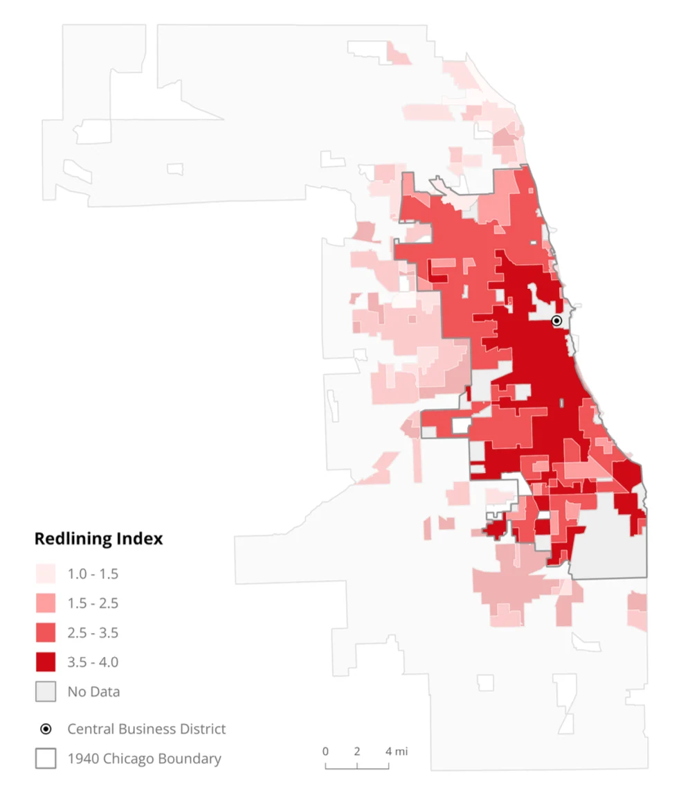

シカゴに残るレッドライニングの影
シカゴで、人種、家賃、かつての住宅差別、緑地への行きやすさがどう重なるかを調べた。

国勢調査のデータをRで整理し、QGISで地区ごとの違いを地図にした。都市の広がりを説明する二つの古典的なモデルとも比べた。
中心部の北には、家賃が高く、白人の割合が高い地区が広がる。一方、南部と西部の黒人・ラテン系住民が多い地区では、家賃が低く、レッドライニングの指標が高く、緑地にも行きにくい傾向があった。街の違いは、中心からの距離だけでは説明できない。